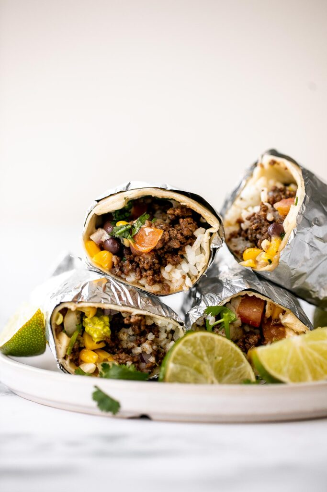

Beef and Bean Burritos

Are you craving something tasteful, filling, and warm for dinner tonight? Go ahead and whip up these burritos stuffed with seasoned beef, black beans, corn, rice, and more!
Wrapped in large flour tortillas, these beef and bean burritos bring restaurant-quality Mexican food to your kitchen table in less than 30 minutes!
These burritos have all the good stuff, but if you want to alter the ingredients, you definitely can.
Ingredients
- Ground Beef
- Beef Seasoning - made with cumin, chili powder, paprika, garlic powder, dried oregano, tomato paste, salt and pepper
- Avocado oil
- Flour tortillas
- Cilantro lime rice
- Lettuce
- Corn
- Black beans
- Tomatoes
- Red onion
- Fresh Cilantro
- Mexican cheese blend
- Sour cream
- Lime
Steps
- Heat oil in a large skillet over medium-high heat. Add ground beef and stir well to cook evenly until nicely browned, about 6-8 minutes. Break up the beef into small pieces.
- Add all seasoning the tomato paste. Reduce heat to medium and let mixture simmer for 3-5 minutes until the sauce thickens a bit, stirring occasionally. Turn off heat and set aside.
- On each tortilla, add a small amount of beef, rice, lettuce, corn, black beans, tomato, onion, cilantro and cheese in the center. Drizzle on top with sour cream and lime juice.
- Roll each burrito, making sure all corners are tightly sealed.
- On the stovetop: Heat the burritos on a skillet or frying pan over medium-high heat for 3-4 minutes on each side.